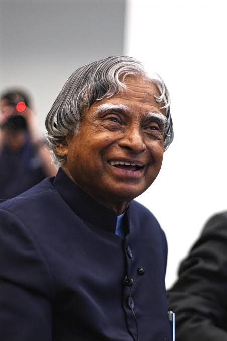

Missile Man of India · Scientist · Teacher · 11th President of India
Explore His Legacy
Dr. A.P.J. Abdul Kalam was born on 15 October 1931 in Rameswaram, Tamil Nadu. He came from a humble family and worked hard throughout his life to achieve excellence in science and technology.
He joined the Defence Research and Development Organisation (DRDO) and later the Indian Space Research Organisation (ISRO), where he played a major role in India's satellite launch vehicle and missile development programs. His contributions earned him the title "Missile Man of India."
In 2002, Dr. Kalam became the 11th President of India. He was widely respected for his simplicity, leadership, and dedication to education. He inspired millions of students to dream big and work hard to achieve their goals.
Even after completing his presidency, he continued teaching and motivating young people across the country. His life remains an inspiration to students, scientists, and future leaders around the world.
Born in Rameswaram, Tamil Nadu.
Graduated in Aerospace Engineering from the Madras Institute of Technology.
Joined the Indian Space Research Organisation (ISRO).
Successfully led the SLV-III project, placing the Rohini satellite into orbit.
Played a key role in India's Pokhran-II nuclear tests.
Served as the 11th President of India.
Passed away while delivering a lecture at IIM Shillong, continuing his passion for teaching until his final moments.
"Dream, dream, dream. Dreams transform into thoughts and thoughts result in action."